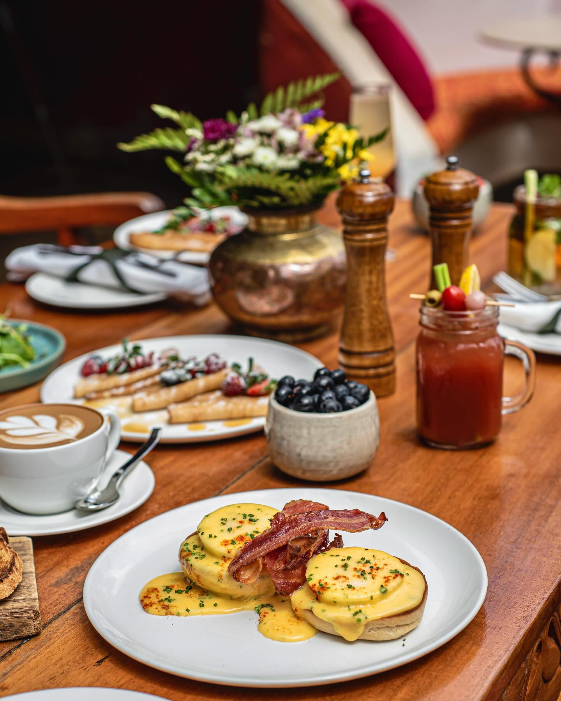
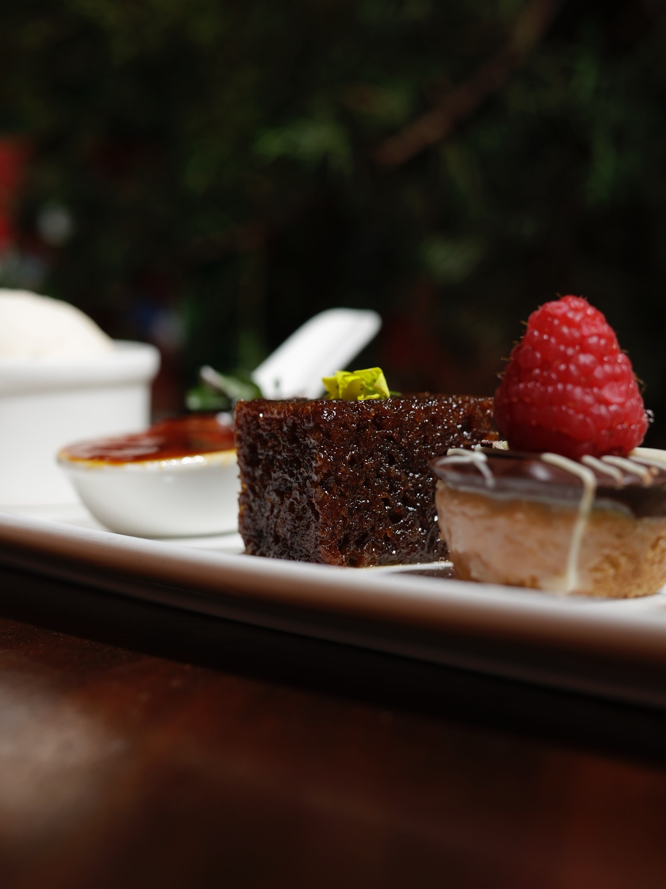

One
The table
We will never turn your table twice in an evening. If you are still talking at eleven, we will bring another round of coffee and let you talk.

Our Story
Talisman was never designed to be a destination. It became one because nobody wanted to leave.


About Us
It started with an old house on Ngong Road, a cook who refused shortcuts, and a garden that kept growing past its own fence.
There was no business plan. There was a kitchen, a few tables set out under the trees, and a stubborn idea that a meal should take as long as it takes. Word travelled the way it does in Karen — slowly, then all at once. People came for lunch. They stayed for the light going gold through the branches.
Decades on, very little has changed and that is entirely deliberate. The garden is bigger. The kitchen is busier. But the pace is the same one: unhurried, generous, and built around whoever is sitting at the table with you.

Chapter I · Origins
One season at a time — a garden that outgrew its fence, a farm that started feeding the kitchen, and a fire that has not gone out since.
A handful of tables set under the trees because the dining room was full. The overflow became the whole point. Nobody has asked to sit indoors since.
Herbs first, then greens, then most of what lands on the plate. Harvested at 05:30, cooked by lunch. It changed how the menu is written — the farm decides, the kitchen answers.
One fire, kept low, kept honest. Our salmon has been smoked in-house ever since — and it is the single thing regulars ask us never to change.
A friend brought a guitar to a Friday dinner. It has more or less never stopped. No stage, no ticket — just musicians in the room and an evening that refuses to end.
The children who once ran through this garden now book the long table for their own families. That is the measure we care about.
Chapter II · The Farm
Our farm is not a marketing line — it is a logistics constraint we happily accept. If the rains are late, the salad changes. If the tomatoes come in all at once, you will see them three ways. We would rather serve you what is genuinely good this week than what is merely available all year.
The rest we buy from people we know by name: the fishmonger on the coast run, the dairy up the road, the beekeeper who still delivers in person.


What we hold onto
One
We will never turn your table twice in an evening. If you are still talking at eleven, we will bring another round of coffee and let you talk.
Two
Smoking, roasting, the fireplace in the rains. Fire is slow and it cannot be hurried, which is exactly why we build the evening around it.
Three
Kept a little wild on purpose. Children should be able to disappear into it for an hour and come back with grass stains and a story.
“People come for dinner and stay for the evening. That has always been the point.”
The Talisman kitchen